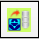
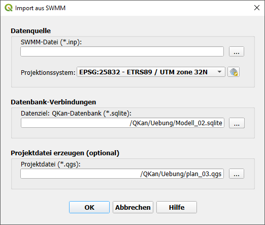
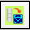
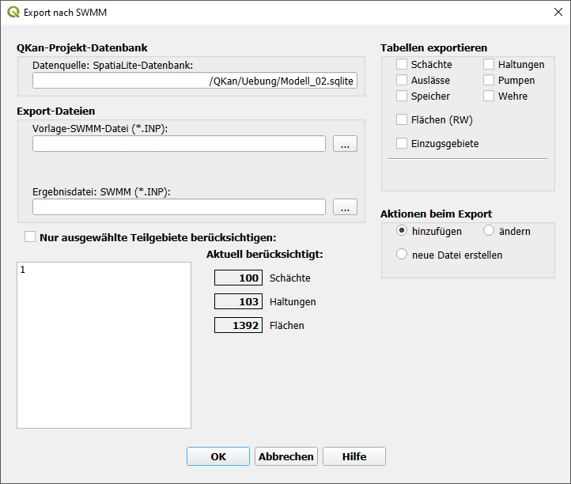
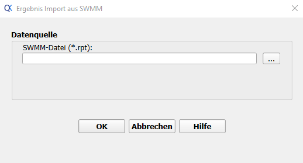

SWMM
Import aus SWMM-Datei
Mit der Funktion  Import aus SWMM-Datei können Daten aus einer SWMM-Datei in ein QKan-Projekt geladen werden.
{kind=link}
Datenquelle
In diesem Bereich wird die mit SWMM erstellte Quelldatenbank (Endung .inp) ausgewählt. Darunter muss das Projektionssystem ausgewählt werden, in dem die Daten in der Datenquelle gespeichert sind. In dem gleichen Projektionssystem wird das QKan-Projekt aufgebaut, sodass beide Projektionssysteme identisch sind.
Datenbank-Verbindung
Hier wird das Datenziel - die Sqlite-Datenbank - ausgewählt. Ist noch keine Zieldatenbank vorhanden, kann diese hier erstellt werden.
Projektdatei erzeugen
Werden die Daten in ein bereits existierendes Projekt geladen, dann ist hier bereits der Pfad der verwendeten Projektdatei angegeben. Existiert noch keine Projektdatei, kann diese hier erstellt werden. Dabei ist es empfehlenswert, diese im selben Verzeichnis mit der QKan-Datenbank zu speichern.
Export in SWMM-Datei
Mit der Funktion  Export in SWMM-Datei können die Daten aus der QKan-Datenbank in eine SWMM-Datei übertragen werden.
{kind=link}
QKan-Projekt-Datenbank
In diesem Bereich wird automatisch die aktuelle QKan-Datenbank eingetragen.
Export-Datei
In diesem Bereich werden die Vorlage für die ERstellung der SWMM-Datei und die zu erstellende Ergebnisdatei ausgewählt.
Nur ausgewählte Teilgebiete berücksichtigen
Soll nur ein Teilgebiet bearbeitet werden, dann kann dies hier, über die Aktivierung der Schaltfläche mit anschließender Auswahl des entsprechenden Teilgebiets, geschehen.
Tabellen exportieren
Aktionen beim Export
-hinzufügen: -ändern: -neue Datei erstellen:
Ergebnis Import aus SWMM
Mit der Funktion Ergebnis Import aus SWMM können Ergebnisdaten aus einer SWMM-Datei in ein QKan-Projekt geladen werden.
Datenquelle
In diesem Bereich wird die mit SWMM erstellte Ergebnissdatei (Endung .rpt) ausgewählt.